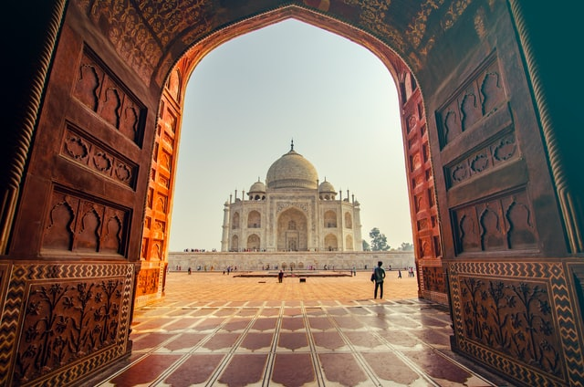

Uğurcan TÜRK
Hakkımda
Merhaba ben Uğurcan TÜRK Bursa'da yaşıyorum bisiklet sürmeyi, seyehat etmeyi ve kod yazmayı severim. Kodluyoruz
topluluğunu linkedin de gördüm ve çok mutlu oldum çünkü çevremde hiç yazlımcı yoktu kodluyoruz topluluğunun
yapmış olduğu paylaşımlar benim gelişmeme büyük katkı sağlamıştır. En çok beğendiğim ise patika.com oldu bu
sayfa beni çok fazla geliştirdi ve geliştirmeye devam ediyor.Teşekkürler kodluyoruz ekibi :)
Çalıştığım konular
HTML5
İlk olarak öğrenmeye başladığım keyifli metin işaretleme dili
CSS
Html ye göre biraz daha zor ama öğrendikten sonra web sitelerimizi biçimlendirebiliriz
Bootstrap
İşimizi kolaylaştıran css kütüphanesi web sitesi yapmayı daha eğlenceli hale getiriyor
Javascript
Web sitesinin olmazsa olmazıdır en çok çalıştığım yazılım dili
React
javascript kütüphanesi facebook tarafından yapılmıştır. Bu aralar javascriptle beraber üzerinde çok yoğunlaştım
Seyahat Etmek İstediğim Yerler


HİNDİSTAN
Hindistan'da gezilecek yerler
- Bangalore (Bengaluru)
Gençlere yönelik Brigade Road ve lüks UB City Alışveriş Merkezi gibi şehrin öne çıkan yerlerinin de arkasında bu yatırımcı desteği bulunuyor.
Restoranlar ve butik biralar bulabileceğin barlar da şehrin güçlü yönlerinden birini oluşturuyor ve dilersen Mavalli Tiffin Rooms gibi klasik lezzetlerden uzaklaşmayan muhteşem yerler de mevcut.
Şehrin trafiği de kirliliği kadar yoğun ve gezerken gözlerinin önünde mantar gibi biten yeni binalara şahit olacaksın ama şehir merkezine gittiğinde, harikulade bir şekilde korunmuş koloni dönemi binalarını, Windsor esintileri taşıyan Bangalore Sarayı’nı ve Cubbon Parkı gibi yeşil alanları bulabilirsin.
- Delhi
Hindistan’ın yönetim ve kültür merkezi olan Delhi o kadar kalabalık ve hareketli bir şehir ki, dışarıda dolaşırken dirseklerini kullanarak kendine yol açman gerekecek.
Şehir yaz aylarında kavurucu sıcaklığa sahip ve kış aylarında da soğuk ama en azından dümdüz bir coğrafyaya sahip olduğundan, sokakta bir yandan kendine yol açmaya çalışıp, bir yandan da golgappas ve chaat papdi (yerel donutlar ve dolgu malzemeli kızarmış ekmek) yerken çok zorlanmayacaksın.
Yine de, mümkün olduğunca metroyu kullanmanı öneriyoruz. Şehrin keyfini çıkarmak için Imperial Hotel’de kokteylini yudumlayabilir, Eski Delhi’nin antik pazarlarını gezebilir, Babür mimarisinin örneklerini görmek için Mars’ı andıran renklere sahip Kızıl Kale’yi ziyaret edebilir ve en sonunda, nilüfer çiçeği şeklindeki huzur dolu Bahai tapınağında meditasyon yapabilirsin.
RUSYA
Rusya'da gezilecek yerler
- ST. PETERSBURG
Gençlere yönelik Brigade Road ve lüks UB City Alışveriş Merkezi gibi şehrin öne çıkan yerlerinin de arkasında bu yatırımcı desteği bulunuyor.
Restoranlar ve butik biralar bulabileceğin barlar da şehrin güçlü yönlerinden birini oluşturuyor ve dilersen Mavalli Tiffin Rooms gibi klasik lezzetlerden uzaklaşmayan muhteşem yerler de mevcut.
Şehrin trafiği de kirliliği kadar yoğun ve gezerken gözlerinin önünde mantar gibi biten yeni binalara şahit olacaksın ama şehir merkezine gittiğinde, harikulade bir şekilde korunmuş koloni dönemi binalarını, Windsor esintileri taşıyan Bangalore Sarayı’nı ve Cubbon Parkı gibi yeşil alanları bulabilirsin.
- Moscow
Hindistan’ın yönetim ve kültür merkezi olan Delhi o kadar kalabalık ve hareketli bir şehir ki, dışarıda dolaşırken dirseklerini kullanarak kendine yol açman gerekecek.
Şehir yaz aylarında kavurucu sıcaklığa sahip ve kış aylarında da soğuk ama en azından dümdüz bir coğrafyaya sahip olduğundan, sokakta bir yandan kendine yol açmaya çalışıp, bir yandan da golgappas ve chaat papdi (yerel donutlar ve dolgu malzemeli kızarmış ekmek) yerken çok zorlanmayacaksın.
Yine de, mümkün olduğunca metroyu kullanmanı öneriyoruz. Şehrin keyfini çıkarmak için Imperial Hotel’de kokteylini yudumlayabilir, Eski Delhi’nin antik pazarlarını gezebilir, Babür mimarisinin örneklerini görmek için Mars’ı andıran renklere sahip Kızıl Kale’yi ziyaret edebilir ve en sonunda, nilüfer çiçeği şeklindeki huzur dolu Bahai tapınağında meditasyon yapabilirsin.